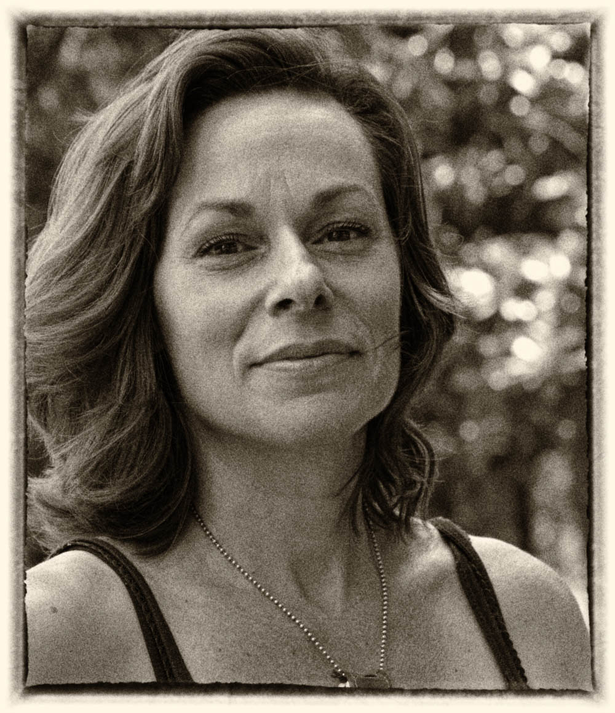
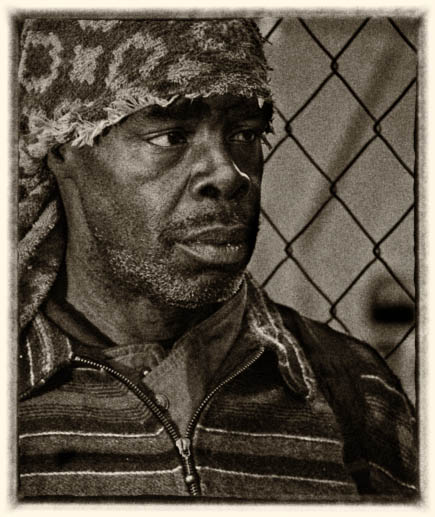

Memphis Views
×
If you would like your views to be a part of this project, or you would like more information, please contact:
Peter
MemphisViews@outlook.com
901-304-6266





The purpose of MemphisViews is two-fold. It is to give voice to a wide range of Memphis residents, some of whom rarely get heard. The other purpose is for historians, anthropologist, geographers, politicians and anyone interested a slice of time in Memphis.
As the project continues and more voices are added, a more comprehensive understanding of who we are will emerge.
If you are interested in participating, please contact me.
